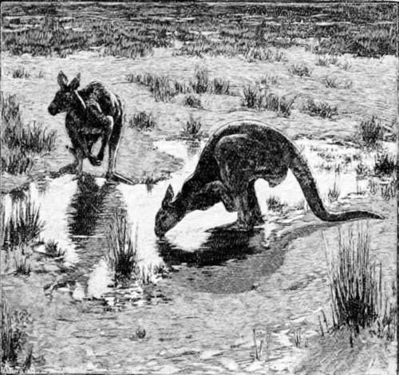
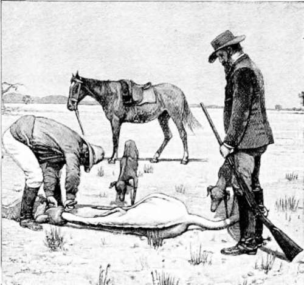

A Kangaroo Hunt. Part 4
Description
This section is from the book "Hunting", by Archibald Rogers. Also available from Amazon: Hunting.
A Kangaroo Hunt. Part 4
We had proceeded only a few hundred yards through the forest in making our detour, when we came upon a hard and well-beaten path with abundant kangaroo signs lying all about it. We had evidently stumbled upon a track worn by the kangaroos in going to and from their feeding-ground; and as it was just as evident that when disturbed they would make off by their accustomed route, I decided to post myself here with the breech-loader and wait events, while R. went forward with the rifle, and made the attempt to stalk the herd. I should have been very pleased to have undertaken the latter part of the programme myself, as R. proposed; but while I was as anxious as any "new chum" could be to shoot a kangaroo, I was still more anxious that the kangaroo should be shot, and I was well aware that my Rocky Mountain experience of deer-stalking might fail me in a new country and against a new game, while R., who was an expert bushman, would make no mistakes. So I put a couple of fresh cartridges in my Manton and waited patiently. It was quite half an hour before Wilkinson and I saw R. again. Then he was crawling slowly down the opposite bank toward the feeding herd, taking advantage of every stump and every tussock of grass, and even wriggling along flat upon his stomach where the cover was too thin to afford protection otherwise. The kangaroos seemed to be browsing in perfect security, perhaps lulled by the weather; and even the "old man" only raised himself occasionally to gaze about in a lazy sort of way, while he chewed his last mouthful of grass, and then lowered himself with a gentle and graceful movement, and proceeded to feed again. He was a tremendous fellow, seven or eight feet in height, as could be seen, even at this distance; and we were constrained to admit that the enthusiasm of the youthful Wilkinson had been entirely justified. After fifteen minutes of extremely careful stalking, R. succeeded in approaching within sixty yards of the herd without awakening their suspicions. Then standing up boldly, and profiting by the momentary surprise of the kangaroos, he brought the "old man" down with a well-aimed shot below and behind the shoulder. As had been foreseen, the rest of the herd immediately made off in our direction; but instead of scattering pell-mell as other wild animals would have done under like circumstances, these queer denizens of a queer country fell into line, and departed in regular Indian file, the big old doe leading the way, and the smallest diminutive pickaninnies bringing up the rear. The doe covered the ground with tremendous leisurely hops, holding her fore-paws before her in a mincing way that was very comical. The smaller animals — each an exact, though diminutive, counterpart of the leader —followed in gradually diminishing perspective, every little beggar hopping just a little more rapidly than the one before him, until the fast-flying legs of the last puny fellow at the end of the line were blurred like the spokes of a wheel in rapid motion. The effect of this extraordinary procession was, to my unaccustomed eyes, so altogether ludicrous and absurd, that I nearly lost my shot in an uncontrollable burst of laughter. As it was, I might just as well have had my laugh out to the end; for although I let the old doe have both barrels full in the flank as she passed me at twenty yards' distance, she never even faltered in her course, and had quite disappeared in the scrub, with all her numerous progeny at her heels, before I had time to replace the empty cartridges. The No. 3 shot, in all probability, had little more effect upon her tough hide than so many grains of sand. Nevertheless, it might perhaps have brought her down if I had aimed at the head, for one pellet penetrating the brain through the eye would have been sufficient. But the motion was so eccentric and perplexing that this would have been a very risky shot; and I preferred the chance of stunning her by a direct double charge full in the body, to the almost absolute certainty of missing her altogether by attempting the more difficult shot.
A Kangaroo "Dip."
Skinning.
While this curious procession was defil-ing before me, I took occasion to observe carefully the peculiarities of their gait, and especially to note the use they made of their extremely powerful tail when in rapid flight; for I had heard more than one opinion upon the subject, and some Australians seem to believe that the kangaroo mainly owes its extreme fleetness to the aid it receives from its muscular caudal appendage. But upon this occasion, at least, I am able to own that every animal held its tail straight out behind it; and if there had remained any doubt upon the subject the impressions left in the muddy soil would have settled the question beyond cavil, for the only imprints were those of the sharp-pointed hoofs of the hind feet.
R's "old man" proved to be a magnificent specimen, measuring seven feet six inches from hoof to snout. It was fortunate that he had been killed outright at the first shot, for he would assuredly have proved himself a very ugly customer if only wounded and partially disabled. Wilkinson assured us that the pelt of this fine fellow would be worth more than a pound sterling in the Melbourne market, for kangaroo leather has lately come into great demand for the higher grades of bookbinding and other work of that kind. Such is the irony of fate; the much-hated pest of forty years ago has become the much-prized rarity of to-day, and the hide alone of one kangaroo is worth the price of four fine sheep.
We skinned him hastily, — for the light was failing by this time, — and slung the great tail and the hind quarters over a pole of tough black wattle which Wilkinson cut out of the neighboring scrub, leaving the remainder of the carcass to feed the foxes, the native cats, and the bandicoots. It was all we could do to struggle home under the weight of this small half of our booty; but by relieving one another occasionally we succeeded at length in reaching the mountain homestead, a triumphant, though wet and dilapidated, procession.
Continue to: